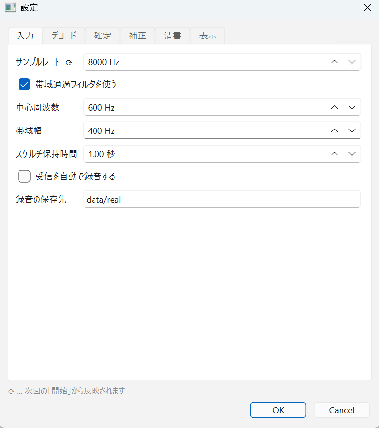
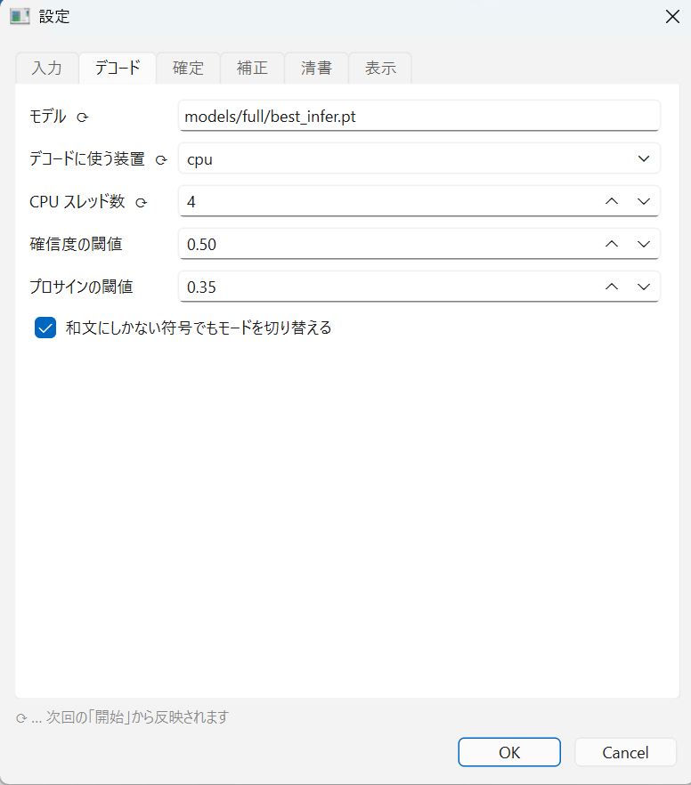
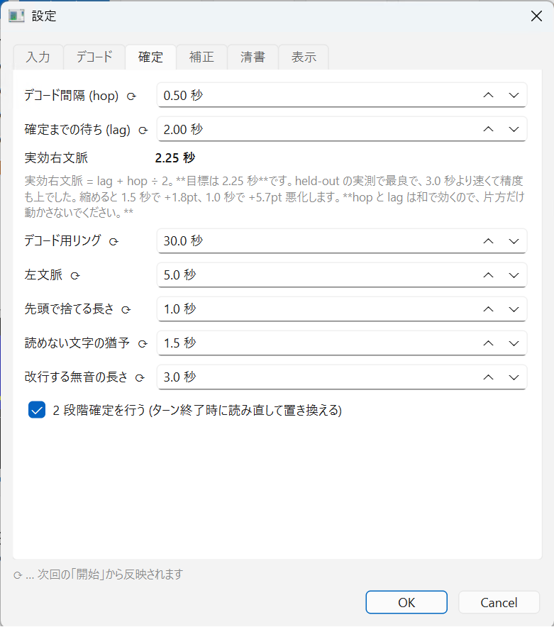
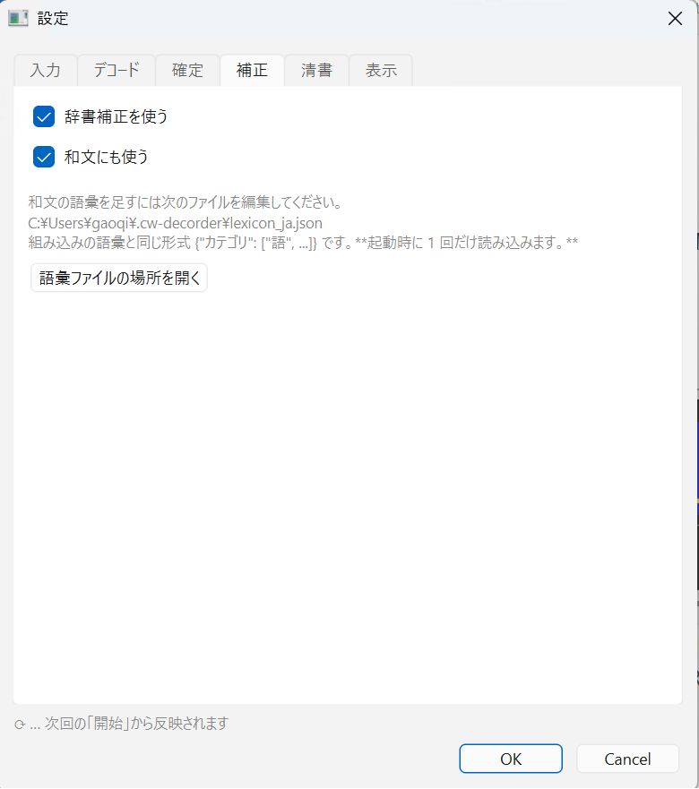
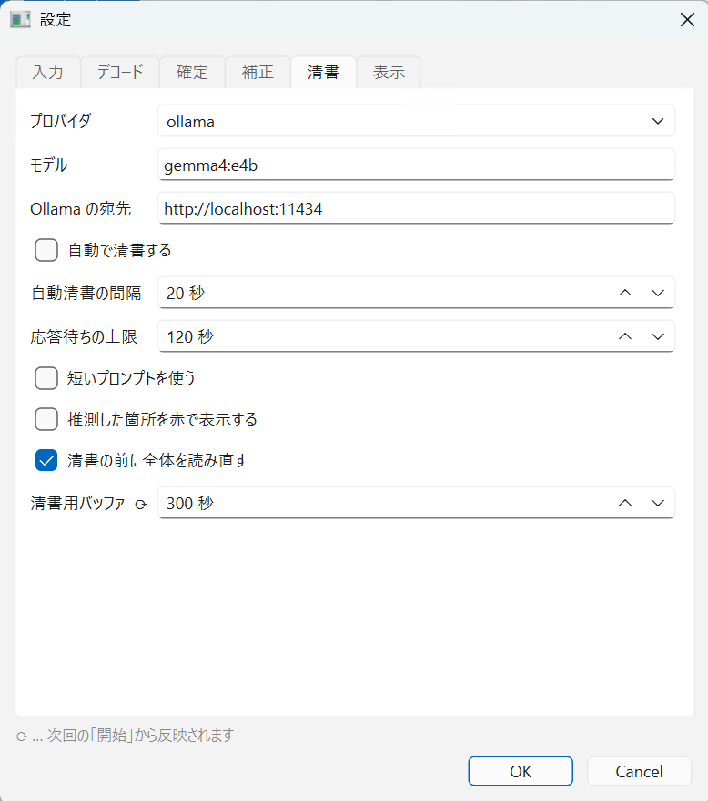
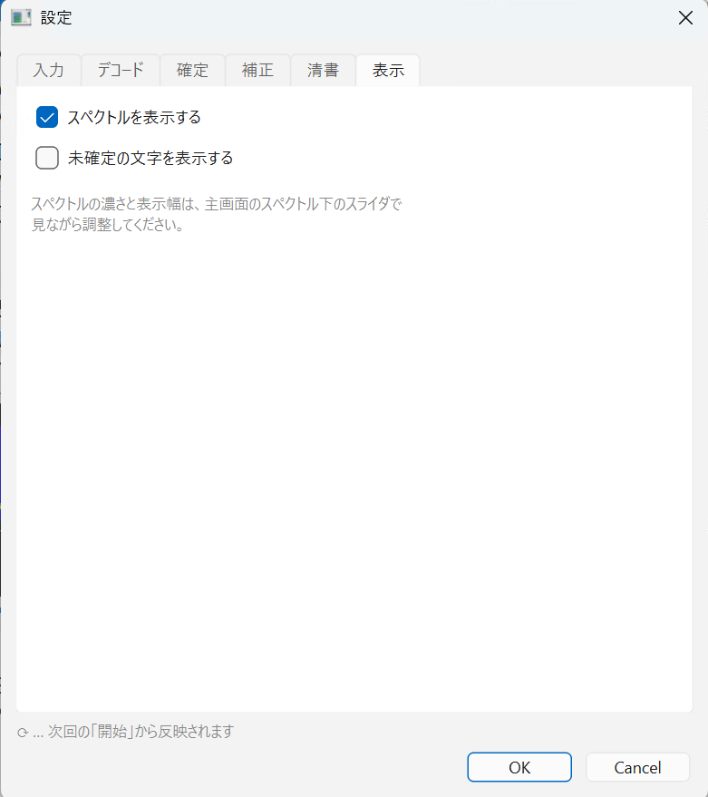

設定項目一覧
設定… で開く 6 タブの全項目です。初期値のままでも動きます。
⟳ が付いた項目
OK を押しただけでは効きません
ラベルの後ろに ⟳ が付いた項目は、 次に ● 開始 を押したときから反映されます。 受信中に読み取りの土台を作り替えると、音が途切れてしまうためです。 OK を押したとき、どれが持ち越されたかがステータスバーに出ます。
入力タブ

| 項目 | 初期値 | 説明 |
|---|---|---|
| サンプルレート ⟳ | 8000 Hz | 取り込みの標本化周波数。8000〜48000、8000 刻み。ふだん変えません |
| 帯域通過フィルタを使う | ON | BPF。LAN 経由で音を受けるときは必ず ON |
| 中心周波数 | 600 Hz | 受信している CW トーンの高さに合わせます（200〜2000） |
| 帯域幅 | 400 Hz | 狭いほどノイズに強く、合わせ込みはシビアに（50〜2000） |
| スケルチ保持時間 | 1.0 秒 | 信号が切れてから無音とみなすまでの猶予（0〜10） |
| 受信を自動で録音する | OFF | 開始と同時に録音を始めます |
| 録音の保存先 | data/real | WAV とデコード結果の置き場所 |
スケルチのしきい値そのものは、主画面のレベルメータ横の縦スライダで決めます。
デコードタブ

| 項目 | 初期値 | 説明 |
|---|---|---|
| モデル ⟳ | — | チェックポイントのファイル。空なら起動時の --ckpt の値 |
| デコードに使う装置 ⟳ | cpu |
cpu / cuda / auto。
このモデルは小さいので GPU にしても速くなりません（レイヤごとの起動費用の方が勝ちます） |
| CPU スレッド数 ⟳ | 4 | 0 で自動（0〜32） |
| 確信度の閾値 | 0.50 | これを下回った文字は _ になります。
下げて _ を消さないでください（理由） |
| プロサインの閾値 | 0.35 | [SK] などのプロサインだけに使う、少し緩めのしきい値 |
| 和文にしかない符号でもモードを切り替える | ON | 自動モードで、ホレを取り逃したときの逃げ道です（モードの選び方） |
確定タブ

ここは読み取りの精度に直結します
デコード間隔と確定までの待ちは、和で効きます。 片方だけ動かすと右文脈が静かに失われます。 実効右文脈の表示が 2.25 秒のままになるように合わせてください。 詳しくは確定の仕組みをご覧ください。
| 項目 | 初期値 | 説明 |
|---|---|---|
| デコード間隔 (hop) ⟳ | 0.50 秒 | 何秒ごとに読み直すか（0.1〜2.0） |
| 確定までの待ち (lag) ⟳ | 2.00 秒 | どれだけ先の音まで見てから確定するか（0.5〜5.0） |
| 実効右文脈 | 2.25 秒 | 読み取り専用の表示。上 2 つから lag + hop ÷ 2 で計算されます |
| デコード用リング ⟳ | 30.0 秒 | 読み直しに使える音声の長さ（5〜120）。広げると音声スレッドが止まります |
| 左文脈 ⟳ | 5.0 秒 | 各回のデコードで、どれだけ前から読み始めるか（1〜30） |
| 先頭で捨てる長さ ⟳ | 1.0 秒 | フィルタが落ち着くまでの過渡を捨てます（0〜5） |
| 読めない文字の猶予 ⟳ | 1.5 秒 | 確信度の低い文字だけ、確定を先送りして読み直します（0〜5） |
| 改行する無音の長さ ⟳ | 3.0 秒 | これ以上の無音でターンの切れ目とみなし、改行します（0〜10） |
| 2 段階確定を行う ⟳ | ON | ターン終了時に、そのターンを全体で読み直して置き換えます |
補正タブ

| 項目 | 初期値 | 説明 |
|---|---|---|
| 辞書補正（3 択） | 欧文と和文の両方に使う | 辞書補正をどこまで使うかを選びます。 「和文だけ」はありません（和文の補正は欧文の補正の上に載るためです） |
| └ 使わない | — | 読み取った結果をそのまま出します |
| └ 欧文だけに使う | — | 欧文の語彙だけで直します。カナには触りません |
| └ 欧文と和文の両方に使う | ● | 和文の語彙（405 語・9 カテゴリ）でも直します。 日常で使わないカナの置き換え（ヱ → イマ）もこれを選んだときだけ働きます |
| 語彙ファイルの場所を開く | — | 語を足すためのファイルがある場所を開きます |
清書タブ

| 項目 | 初期値 | 説明 |
|---|---|---|
| プロバイダ | ollama | ollama / openai / claude |
| モデル | llama3.1 | 実測では gemma4:e4b が良好（比較） |
| Ollama の宛先 | http://localhost:11434 | 別の PC で動かしているときはここを変えます |
| 自動で清書する | OFF | 文の区切りごとに短く清書します |
| 自動清書の間隔 | 20 秒 | 区切りが来ない長い送信のための保険（5〜300） |
| 応答待ちの上限 | 120 秒 | これを超えたら諦めます（10〜600） |
| 短いプロンプトを使う | ON | 和文にだけ効きます。小さいモデルには短い指示の方が良い（理由） |
| 推測した箇所を赤で表示する | ON | 切っても本文はそのまま出ます |
| 清書の前に全体を読み直す | ON | 別スレッドで全体をデコードし直します |
| 清書用バッファ ⟳ | 300 秒 | 読み直しに使う音声の長さ（30〜900）。デコード用リングとは別のバッファです |
表示タブ

| 項目 | 初期値 | 説明 |
|---|---|---|
| スペクトルを表示する | ON | 切ると主画面が縦に短くなります |
| 未確定の文字を表示する | OFF | 確定前の文字を薄く出します。確定した文章そのものは変わりません |
スペクトルの濃さと幅は主画面のスライダで、見ながら合わせてください。
設定の保存場所とリセット
設定（ウィンドウの位置なども含みます）はアプリの終了時に自動で保存され、次回に復元されます。 おかしくなったときは設定ファイルを削除してから起動し直してください。次回起動時に初期値で作り直されます。
| 内容 | 場所 |
|---|---|
| アプリの設定 | ~/.cw-decorder/ |
| 経歴 | ~/.cw-decorder/operator.json |
| 和文の語彙 | ~/.cw-decorder/lexicon_ja.json |